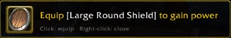
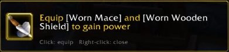

When a better item lands in your bags, Questify announces it in the middle of the screen. Click to equip it, right-click to close.
With a two-hander equipped, a better one-hander and shield pair is offered too, and both are equipped in one click.
Shaman with a staff.

